Hướng dẫn sử dụng MailDev
Tài liệu cho developer, owner/PM dự án, member, admin và auditor. Hệ thống bắt mail dùng cho môi trường phát triển và kiểm thử của công ty: ứng dụng gửi mail vào đây thay vì gửi thật.
Cập nhật 2026-10-29
1. Bối cảnh
Vì sao có hệ thống này?
Trong lúc phát triển và kiểm thử, ứng dụng vẫn phải gửi email (xác nhận đăng ký, đặt lại mật khẩu, hoá đơn, thông báo). Nhiều dự án đã cấu hình SMTP thật của công ty ngay trong code hoặc file config dev. Khi dữ liệu test được copy từ môi trường thật, địa chỉ người nhận là khách hàng thật: một lần chạy batch hay bấm nhầm là hàng loạt mail test rời khỏi công ty, không ai biết, không truy vết được.
- Rủi ro lộ dữ liệu khách hàng và ảnh hưởng uy tín công ty.
- Không có nhật ký ai gửi gì, từ máy nào, lúc nào.
- Mail catcher cá nhân (MailDev, Mailpit chạy trên máy dev) không chia sẻ được với QA, PM; dùng chung một máy thì dự án này thấy mail dự án kia.
- Khách hàng muốn xem mail test của dự án họ nhưng không có tài khoản AD.
MailDev giải quyết đúng các điểm đó: mỗi dự án một vùng cô lập, ứng dụng trỏ SMTP/API vào đây, mọi mail được giữ lại để xem, không bao giờ gửi ra ngoài trừ khi owner duyệt relay. Mọi thao tác đều được ghi nhật ký.
2. Hệ thống làm gì
Bắt mail theo dự án
Ứng dụng gửi qua SMTP (25, 587 STARTTLS, 465 TLS) hoặc API giả lập SendGrid, AWS SES, Azure Communication Services, Microsoft Graph, Gmail. Credential quyết định dự án nhận mail; địa chỉ người nhận không quan trọng.
Xem mọi nơi
Web giống Outlook, hoặc thêm vào Outlook/Thunderbird/Apple Mail qua IMAP (143/993) và POP3 (110/995).
Không rò rỉ
Mail không bao giờ được gửi tới người nhận thật. Relay chỉ hoạt động khi admin bật và owner duyệt từng mail.
Cô lập và phân quyền
Đăng nhập AD. Chỉ thấy dự án mình là thành viên. Owner quản lý thành viên, member chỉ xem. Khách ngoài có tài khoản riêng.
Bảo mật dữ liệu
Mail mã hoá tại chỗ bằng khoá riêng từng dự án (OpenBao). Tự xoá sau 14 ngày. Chữ ký S/MIME được kiểm tra theo PKI công ty.
Nhật ký đầy đủ
Mọi đăng nhập web/SMTP/IMAP/POP3/API, mọi mail bắt được, mọi thao tác và quyết định relay đều ghi kèm IP, thời gian, giao thức.
Khái niệm
| Khái niệm | Ý nghĩa |
|---|---|
| Dự án (project) | Một vùng mail riêng, có slug (ví dụ erp-stg), credential riêng, thành viên riêng, thời gian lưu riêng. |
| Credential | Bộ thông tin kết nối của dự án: login SMTP/IMAP/POP3, API key, cặp khoá kiểu SES. Owner có thể khởi tạo lại (đổi toàn bộ). |
| Owner | PM hoặc trưởng nhóm. Quản lý thành viên, đổi credential, duyệt relay, xem nhật ký dự án. Một dự án có thể có nhiều owner. |
| Member | Developer, QA. Xem hộp thư, xem thông tin phát triển, xoá mail, yêu cầu relay. |
| Admin | Quản trị hệ thống: tạo/lưu trữ/xoá dự án, gán owner, quản lý người dùng, thời gian lưu, cấu hình đích relay, xem toàn bộ nhật ký. |
| Auditor | Chỉ đọc: xem mọi dự án và toàn bộ nhật ký, không sửa gì. |
| Tài khoản khách ngoài | Tài khoản local (không AD) do admin tạo cho khách hàng. Chỉ làm member, không vào dự án demo. |
| Dự án demo | Sandbox chung: ai đăng nhập AD cũng là member, admin là owner. Không gửi dữ liệu nhạy cảm vào đây. |
3. Đăng nhập
Truy cập https://maildev.example.com và đăng nhập bằng tài khoản Active Directory (username không kèm @example.com). Khách ngoài dùng username/mật khẩu do admin cấp và phải đổi mật khẩu ngay lần đầu.
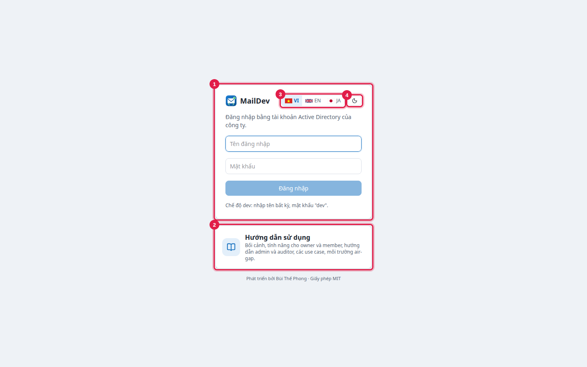
- Sai mật khẩu 5 lần với tài khoản khách ngoài sẽ bị khoá 15 phút; admin có thể mở khoá sớm.
- Ngôn ngữ và giao diện được nhớ theo trình duyệt.
- Phiên đăng nhập 12 giờ, tự gia hạn khi đang dùng.
4. Trang chủ
Cột trái liệt kê các dự án bạn được gán. Rê chuột (hoặc bấm) vào một dự án, cột phải hiện ba nhánh: Thông tin phát triển, Hộp thư, và với owner/admin thêm Hàng đợi relay và Quản lý dự án.
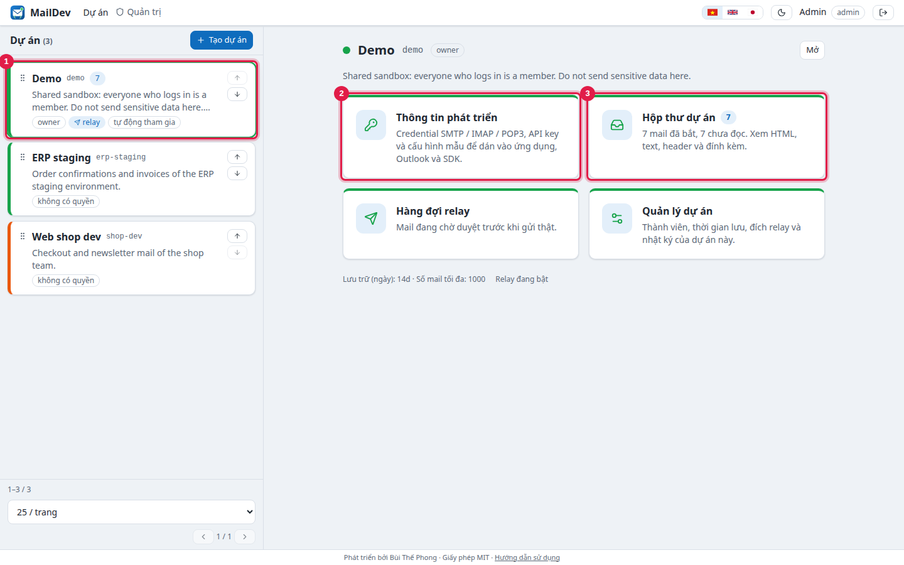
- Mỗi card có màu viền cố định theo dự án, dùng lại ở thanh điều hướng.
- Nút mũi tên hoặc kéo thả để sắp xếp thứ tự; thứ tự được nhớ trong trình duyệt của bạn.
- Owner/admin bấm biểu tượng bút chì để sửa mô tả ngay trên card.
- Số trên badge xanh là mail chưa đọc.
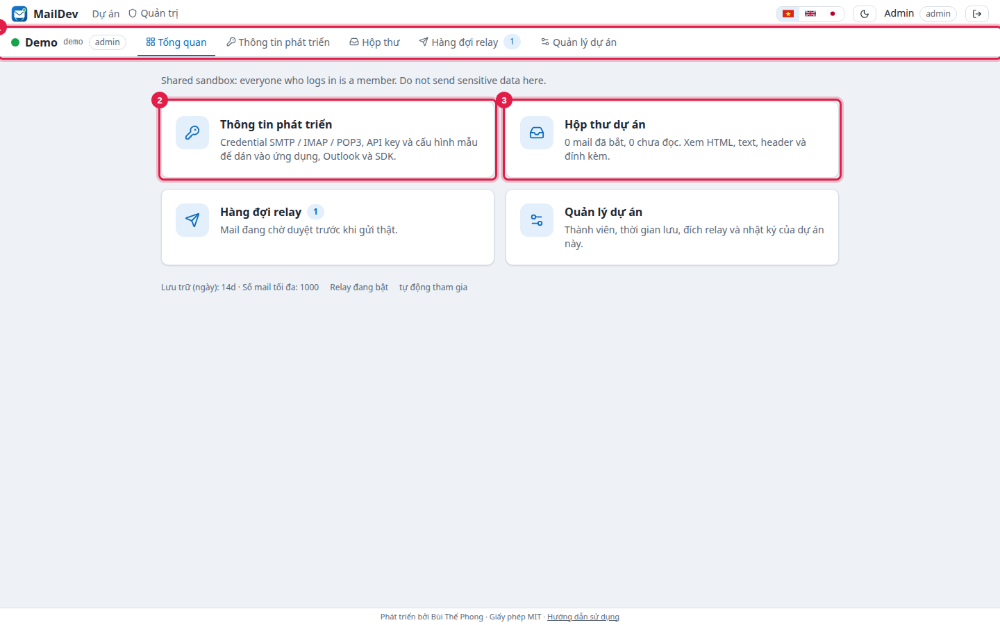
5. Thông tin phát triển (dành cho developer)
Đây là nơi lấy credential và cấu hình mẫu. Credential hiện thẳng vì chỉ dùng cho môi trường dev; không bao giờ dùng chúng để gửi mail thật.
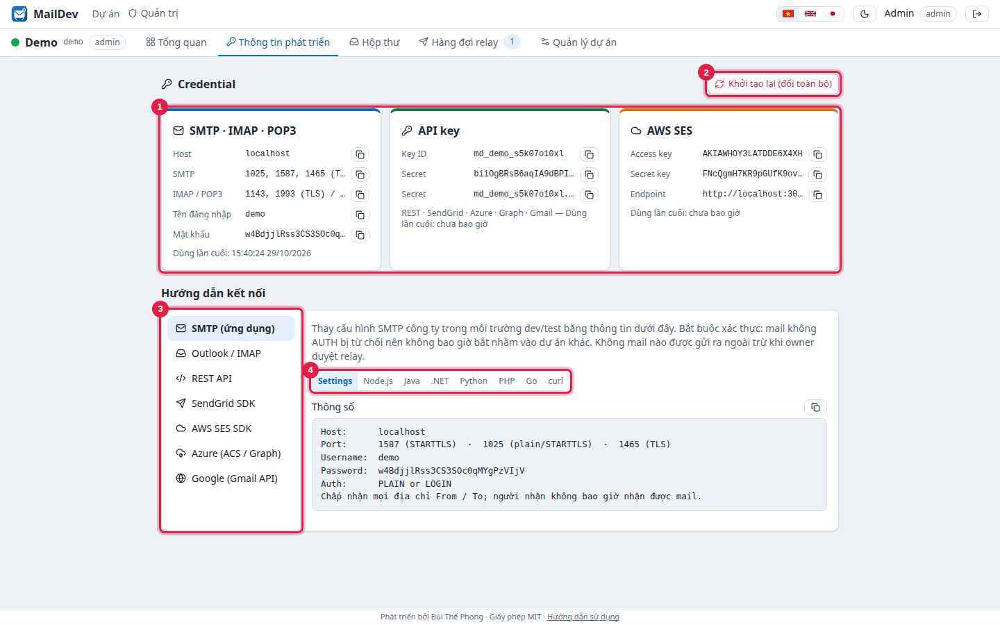
Cổng và máy chủ
| Dịch vụ | Máy chủ | Cổng | Ghi chú |
|---|---|---|---|
| SMTP | smtp.maildev.example.com | 25 (plain/STARTTLS), 587 (STARTTLS), 465 (TLS) | Bắt buộc AUTH PLAIN hoặc LOGIN. Mail không AUTH bị từ chối. |
| IMAP | smtp.maildev.example.com | 143 (STARTTLS), 993 (TLS) | Một hộp INBOX cho mỗi dự án. |
| POP3 | smtp.maildev.example.com | 110 (STLS), 995 (TLS) | Xoá trên client sẽ xoá mail khỏi dự án. |
| Web và API | maildev.example.com | 443 | Chỉ cổng này được public ra internet. |
Cấu hình ứng dụng qua SMTP
Tab SMTP (ứng dụng) có sẵn đoạn cấu hình cho Node.js (nodemailer), Spring Boot, Laravel/PHP, Django, .NET, Go, Java (jakarta.mail) và lệnh test bằng swaks. Chỉ cần thay host, port, username, password; địa chỉ From/To giữ nguyên như môi trường thật.
Host: smtp.maildev.example.com Port: 587 (STARTTLS) hoặc 25 / 465 Username: <slug dự án> Password: <mật khẩu SMTP của dự án>
Dùng SDK của nhà cung cấp (không đổi code)
- SendGrid: giữ nguyên SDK, đổi host về
https://maildev.example.com/sendgrid, API key của dự án. - AWS SES (v1 và v2): đổi endpoint về
https://maildev.example.com/ses, dùng access key id / secret kiểu SES mà dự án cấp. - Azure Communication Services Email: connection string
endpoint=https://maildev.example.com/azure/<key id>;accesskey=<base64(secret)>, SDK ký HMAC như thật. - Microsoft Graph sendMail: base URL
https://maildev.example.com/graph/<key id>/v1.0, bearer = API key. - Gmail API: root URL
https://maildev.example.com/gmail/<key id>, bearer = API key. - REST chung:
POST /api/v1/sendvới JSON hoặc raw RFC 822.
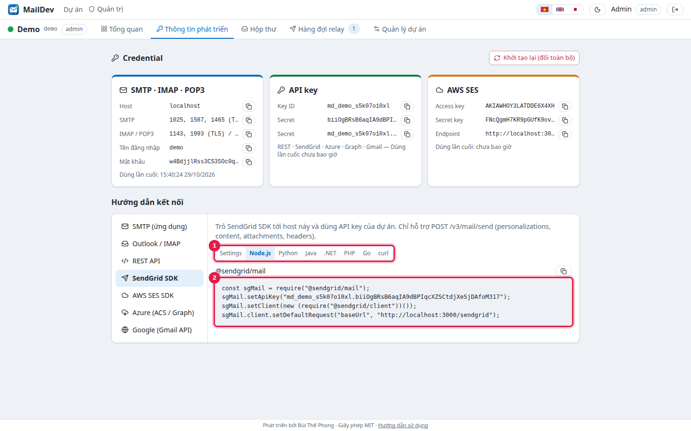
Đọc mail bằng Outlook
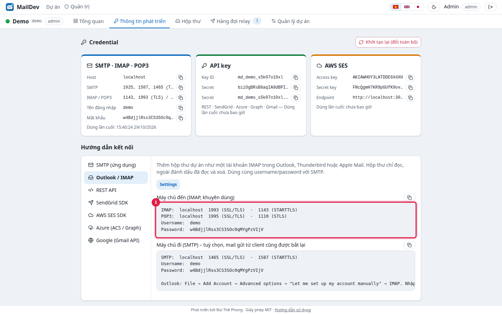
- Outlook: File → Add Account → Advanced options → “Let me set up my account manually” → IMAP.
- Email address: nhập bất kỳ, ví dụ
<slug>@maildev.local(chỉ là nhãn). - Incoming: smtp.maildev.example.com, 993, SSL/TLS. Outgoing: smtp.maildev.example.com, 465 SSL/TLS (hoặc 587 STARTTLS).
- Username/password: credential SMTP của dự án.
6. Hộp thư
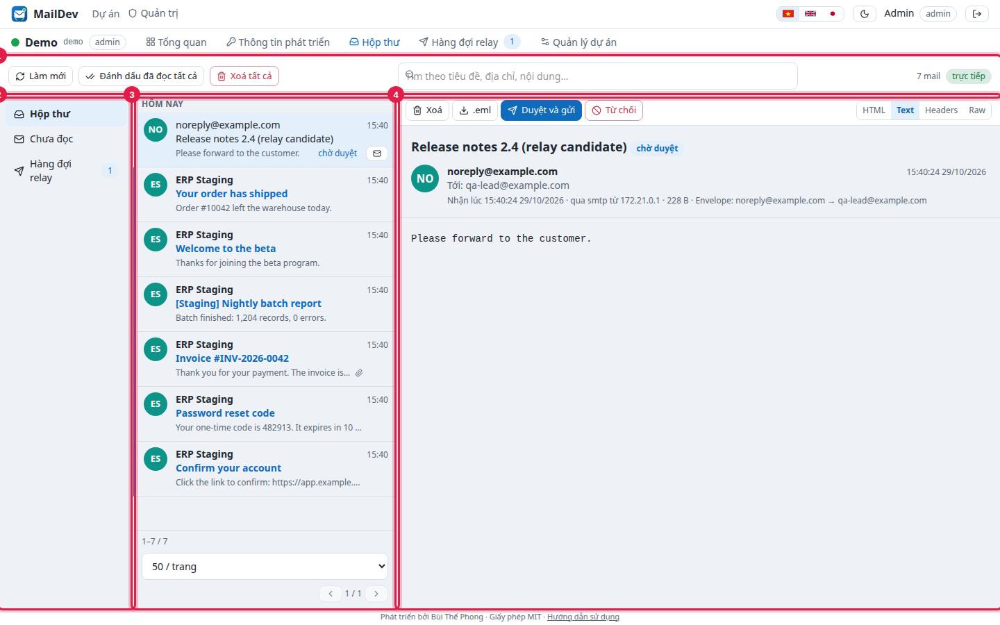
- Tìm theo tiêu đề, địa chỉ (cả phần trước @), nội dung text. Với mail đã mã hoá, tìm trong nội dung không khả dụng; tìm theo tiêu đề và địa chỉ vẫn hoạt động.
- Phím ↑/↓ hoặc j/k để chuyển thư. Rê chuột vào thư để đánh dấu đọc/chưa đọc.
- Ngăn đọc: nút HTML / Text / Headers / Raw; chế độ HTML có nút xem ở độ rộng điện thoại, tablet, desktop để kiểm tra responsive.
- Ảnh từ xa bị chặn mặc định (tránh kích hoạt tracking pixel). Bấm biểu tượng ảnh để tải khi cần.
- Đính kèm hiện dạng chip ngay dưới tiêu đề, bấm để tải. Tải
.emlđể mở bằng mail client. - Thư có chữ ký S/MIME hiện badge: hợp lệ (người ký), không hợp lệ (lý do), hoặc đã mã hoá.
- Danh sách phân trang 25/50/100; thư mới hiện ngay nhờ cập nhật trực tiếp (badge 'trực tiếp').
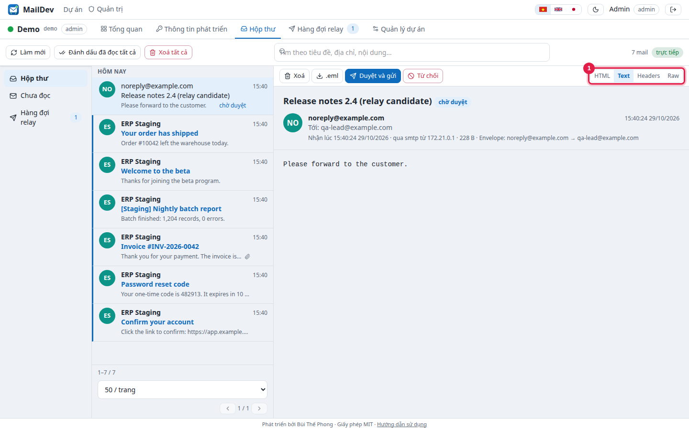
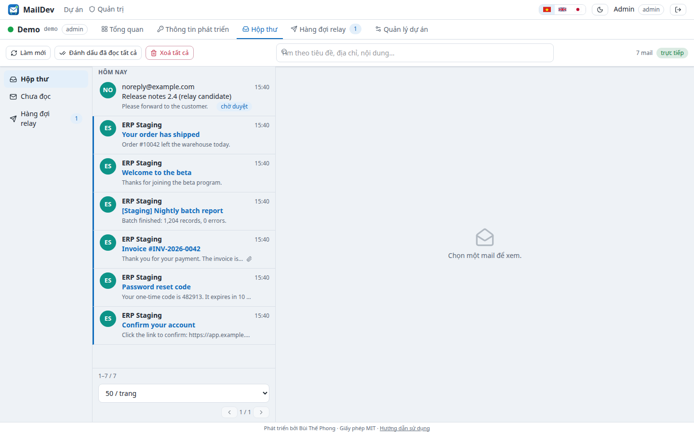
7. Các use case thường gặp
Dev chạy app local hoặc trên môi trường staging
- Owner tạo dự án hoặc nhờ admin tạo, khởi tạo credential.
- Dev dán cấu hình SMTP (hoặc SDK) vào file config dev/staging.
- Chạy tính năng gửi mail như bình thường; mở Hộp thư để xem kết quả, kiểm tra HTML hiển thị ở các độ rộng.
QA kiểm thử luồng xác nhận email
QA mở hộp thư dự án trên web hoặc trong Outlook, lấy link xác nhận/OTP từ mail. Không cần tài khoản email thật.
Test tự động (E2E)
GET /api/projects/<id>/emails?q=verification # tìm mail GET /api/projects/<id>/emails/<eid> # body, đính kèm GET /api/projects/<id>/events # Server-Sent Events: chờ mail mới # Xác thực bằng cookie phiên của người dùng (đăng nhập POST /api/auth/login)
Gửi thật một mail đã duyệt (relay)
- Admin cấu hình đích relay cho dự án (SMTP công ty, SES, SendGrid) và bật relay.
- Từ lúc bật, mọi mail mới bắt được nằm trong Hàng đợi relay ở trạng thái chờ duyệt.
- Owner mở hàng đợi, chọn một hoặc nhiều mail, duyệt (gửi thật) hoặc từ chối, có ghi chú.
- Người nhận ngoài allow-list sẽ bị chặn. Mọi quyết định được ghi nhật ký.
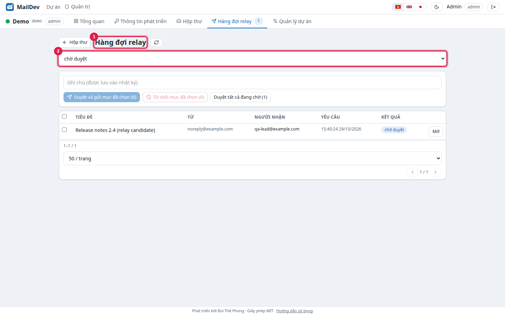
Khách hàng xem mail test của dự án họ
Admin tạo tài khoản khách ngoài, owner thêm vào dự án với vai trò member. Khách đăng nhập qua internet (chỉ 443), chỉ thấy dự án đó, không thấy demo, không có quyền quản lý.
Mail S/MIME
Mail ký bằng chứng chỉ do PKI công ty (OpenBao) cấp hiện 'Ký bởi … ✓'. Mail mã hoá được giữ nguyên để Outlook tự giải mã bằng chứng chỉ của người dùng; web chỉ hiện nhãn.
8. Hướng dẫn cho Owner / PM
Owner có mọi quyền của member và thêm phần Quản lý dự án với bốn tab.
Thành viên
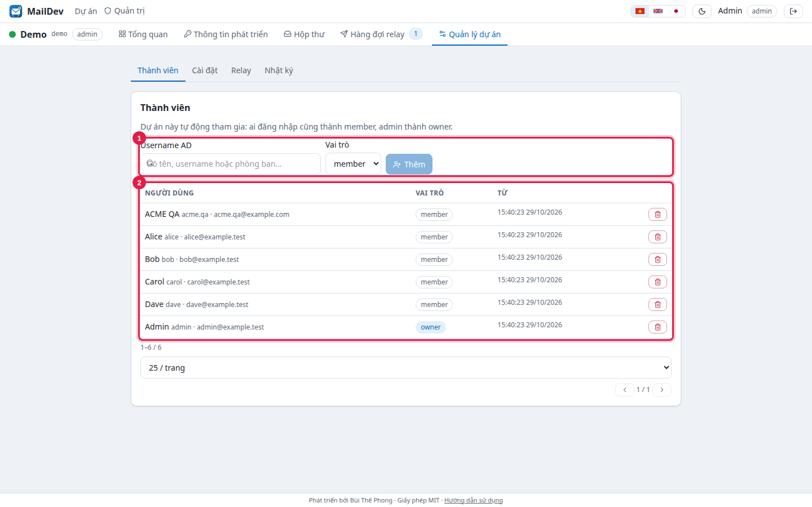
- Chỉ thêm được người có trong danh sách nhân sự (AD) hoặc tài khoản khách ngoài đã tồn tại; tên lạ bị từ chối.
- Tài khoản khách ngoài chỉ có thể là member.
- Người chưa từng đăng nhập vẫn thêm được; quyền có hiệu lực ngay khi họ đăng nhập.
Cài đặt
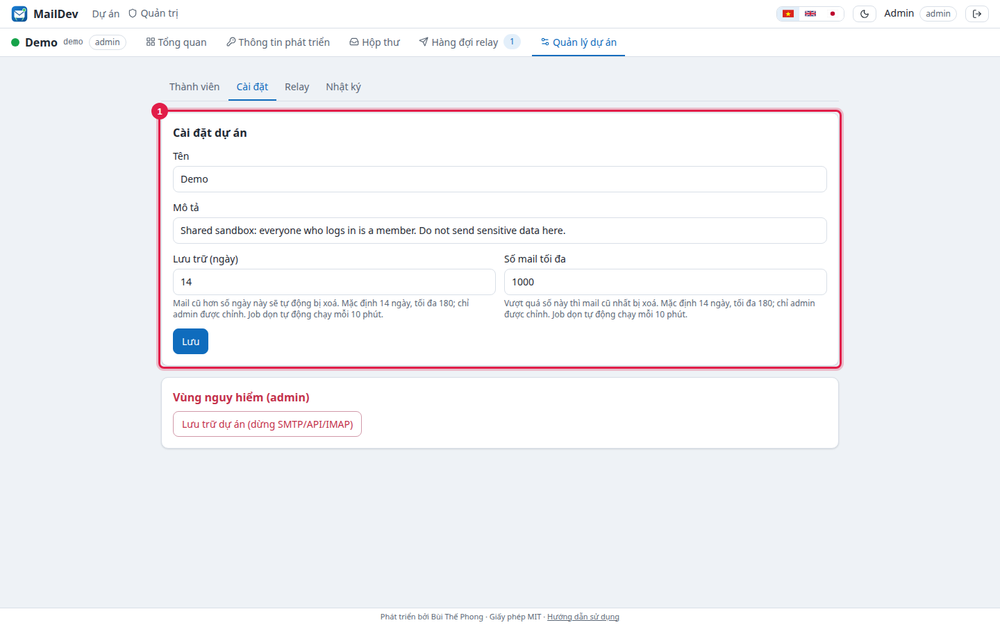
Relay
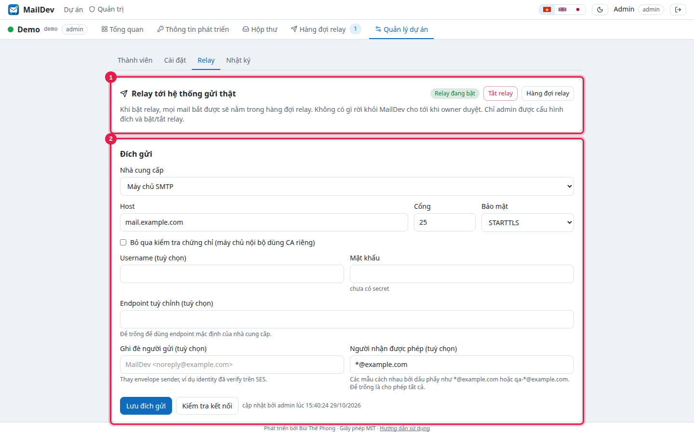
Nhật ký dự án
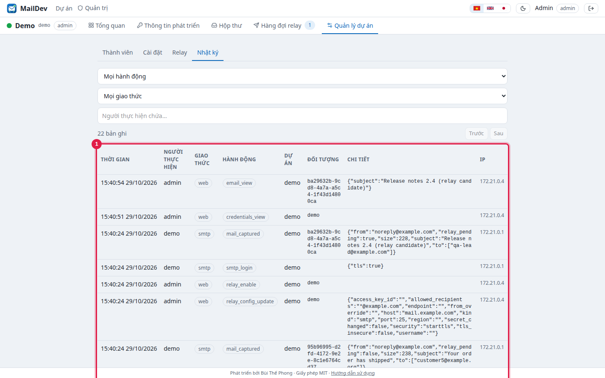
Khởi tạo lại credential
9. Hướng dẫn cho Member
- Xem Thông tin phát triển để lấy credential và cấu hình mẫu.
- Xem, tìm, xoá mail trong Hộp thư; đánh dấu đã đọc.
- Thêm hộp thư dự án vào Outlook qua IMAP.
- Khi relay đang bật: có thể yêu cầu relay lại mail đã thất bại hoặc bị từ chối; không được duyệt.
- Không sửa được thành viên, cài đặt hay credential.
10. Hướng dẫn cho ADMIN
Menu Quản trị có ba tab: Quản lý dự án, Quản lý người dùng, Quản lý logs. Mỗi tab có tìm kiếm, sắp xếp theo cột, lọc và phân trang.
Quản lý dự án
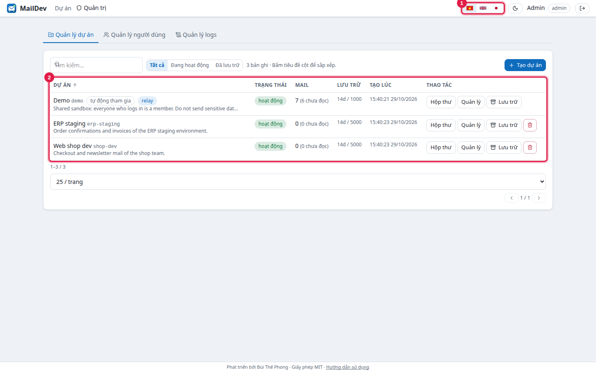
- Tạo dự án: slug (chữ thường, số, gạch ngang; cũng là username SMTP), tên, owner (username AD), mô tả. Credential được sinh ngay.
- Lưu trữ: credential ngừng xác thực (SMTP/IMAP/POP3/API), hộp thư chỉ đọc, không đổi credential, không duyệt relay, và không bị job dọn xoá. Kích hoạt lại khôi phục tất cả.
- Xoá: xoá vĩnh viễn dự án và toàn bộ mail; khoá mã hoá của dự án trên OpenBao bị huỷ (dữ liệu trong backup không còn đọc được). Dự án demo không xoá được.
- Thời gian lưu: mặc định 14 ngày, admin chỉnh từ 1 đến 180 ngày và số mail tối đa; job dọn chạy mỗi 10 phút và ghi nhật ký
retention_cleanup.
Quản lý người dùng
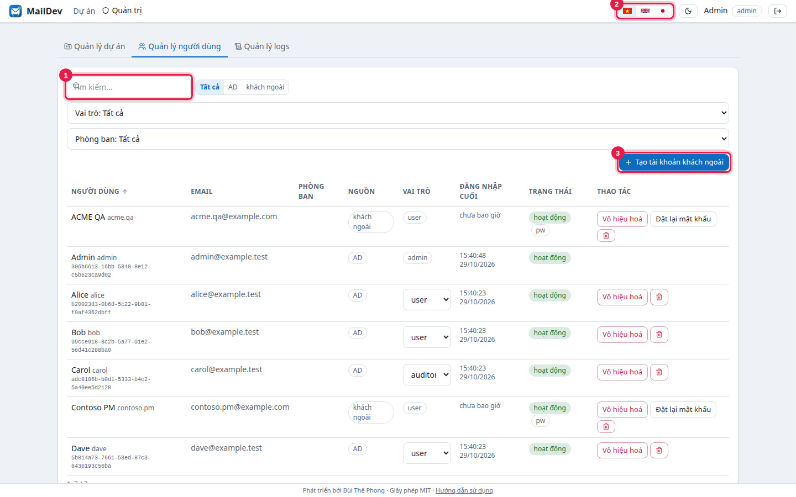
- Toàn bộ nhân sự được nhập tự động từ danh sách công ty (directory.example.com/users) mỗi 15 phút, kèm phòng ban. Người chưa đăng nhập hiện 'chưa bao giờ'.
- Vai trò chỉ đổi được cho tài khoản AD: admin, auditor, user. Không tự hạ quyền chính mình.
- Tài khoản khách ngoài: tạo với mật khẩu tạm (hiện một lần), bắt buộc đổi khi đăng nhập; đặt lại mật khẩu, mở khoá, vô hiệu, xoá. Không bao giờ là admin/auditor, không vào demo.
- Tái sử dụng username: khi nhân viên nghỉ, AD xoá tài khoản; người mới cùng username có objectGUID khác. Lần đăng nhập đầu của người mới, hệ thống tự reset: role về user, gỡ mọi thành viên dự án, chỉ còn demo, ghi nhật ký
user_identity_reset. - Vô hiệu hoá sẽ kết thúc mọi phiên đăng nhập của người đó.
Quản lý logs
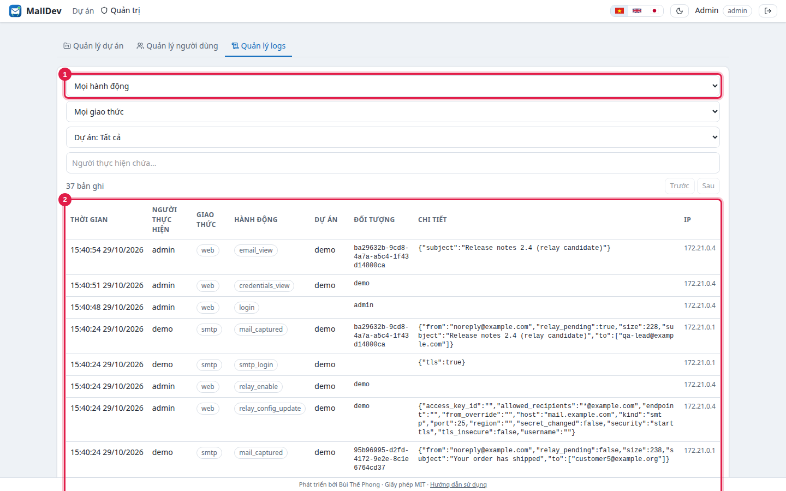
| Nhóm hành động | Ví dụ |
|---|---|
| Đăng nhập | login, login_failed, smtp_login, smtp_login_failed, imap_login, pop3_login, api_auth_failed (kèm IP, TLS) |
| Dự án / thành viên | project_create, project_update, project_delete, member_add, member_invite, member_remove |
| Credential | credentials_init, credentials_reinit, credentials_view |
| mail_captured (từng mail, giao thức nguồn), email_view, email_download, attachment_download, email_delete, inbox_clear | |
| Relay | relay_enable, relay_disable, relay_config_update, relay_test, relay_request, relay_approve, relay_sent, relay_failed, relay_reject |
| Người dùng | user_role_change, user_disabled_change, local_user_create, password_change, password_reset, user_unlock, user_delete, user_identity_reset |
| Hệ thống | retention_cleanup |
Cấu hình đích relay
- Vào dự án → Quản lý dự án → tab Relay.
- Chọn loại: SMTP server (host, cổng, None/STARTTLS/TLS, tuỳ chọn bỏ qua kiểm tra chứng chỉ cho server nội bộ, tài khoản), AWS SES (region, access key, secret), SendGrid (API key). Có thể ghi đè endpoint.
- Tuỳ chọn: ghi đè người gửi (ví dụ identity đã verify trên SES), allow-list người nhận (
*@example.com, qa-*@example.com). - Lưu, bấm Kiểm tra kết nối (SMTP), rồi Bật relay. Từ đây mail mới sẽ chờ owner duyệt.
*@example.com.Vận hành
- Mã nguồn: GitHub
phongbui83/maildev. Triển khai bằng kustomize trong repo deploy, namespacemaildev. - Dữ liệu: PostgreSQL ngoài cluster; mail, body, đính kèm mã hoá bằng khoá riêng từng dự án do OpenBao Transit bọc. Giữ an toàn master key và AppRole OpenBao.
- Chứng chỉ TLS do cert-manager cấp (Let's Encrypt) cho maildev.example.com và smtp.maildev.example.com; LDAPS tới AD được pin chứng chỉ (chạy lại
make secretskhi AD đổi chứng chỉ). - Nhật ký ứng dụng dạng JSON trong pod
maildev-api.
11. Hướng dẫn cho AUDITOR
Auditor là vai trò độc lập, chỉ đọc, dùng cho kiểm toán nội bộ hoặc bộ phận bảo mật.
- Thấy mọi dự án: tổng quan, thông tin phát triển, hộp thư (chỉ đọc), thành viên, cấu hình relay (không thấy secret), nhật ký dự án.
- Tab Quản lý logs: toàn bộ nhật ký hệ thống, lọc theo dự án, hành động, giao thức, người thực hiện, phân trang.
- Không xoá mail, không duyệt relay, không sửa thành viên, không tạo dự án.
- Câu hỏi kiểm toán điển hình: ai đã tải mail X? (
email_download), máy nào đăng nhập SMTP dự án Y tuần này? (lọcsmtp_login+ dự án), mail nào đã được gửi thật? (relay_sentkèm người duyệt và người nhận), tài khoản nào bị reset danh tính? (user_identity_reset).
12. Bảo mật và dữ liệu
| Kiểm soát | Cách thực hiện |
|---|---|
| Xác thực | AD qua LDAPS, khoá theo objectGUID; tài khoản khách ngoài băm argon2id, khoá sau 5 lần sai, bắt buộc đổi mật khẩu. |
| Phân quyền | admin / auditor / user toàn cục; owner / member theo dự án; người ngoài dự án nhận 404. |
| Mã hoá lưu trữ | Mỗi dự án một khoá dữ liệu bọc bởi khoá Transit riêng trên OpenBao; raw, body, đính kèm mã hoá AES-GCM; xoá dự án = huỷ khoá. |
| Truyền tải | TLS Let's Encrypt cho SMTP/IMAP/POP3/HTTPS; credential dự án mã hoá AES-GCM bằng master key. |
| Hiển thị an toàn | HTML được sanitize, chạy trong iframe sandbox, CSP chặn tài nguyên từ xa; đính kèm HTML/SVG buộc tải về. |
| S/MIME | Verify chữ ký theo chuỗi CA cấu hình (OpenBao PKI) và root công cộng; không bao giờ giải mã. |
| Lưu trữ | 14 ngày mặc định, tối đa 180, job dọn mỗi 10 phút, dự án lưu trữ không bị dọn. |
| Nhật ký | Mọi hành động, mọi giao thức, kèm IP; auditor độc lập. |
13. Môi trường air-gap
Một số dự án chạy trong mạng cô lập, không truy cập được maildev.example.com, AD, OpenBao hay PostgreSQL tập trung.
Hiện tại
- Bản đầy đủ có thể chạy bằng
docker compose(repo deploy) với PostgreSQL đi kèm, chế độ xác thựcdevhoặc LDAP nội bộ của khách, không mã hoá OpenBao, S/MIME dùng file CA. Phù hợp khi khách cho phép Postgres. - Xuất cấu hình: chỉ cần image
maildev/api,maildev/web, một Postgres và biến môi trường trong.env.example.
Bản lite (đã phát hành)
- Một image duy nhất, một dự án, không multi-tenant, không AD.
- Tài khoản local, mặc định admin/admin và bắt buộc đổi mật khẩu lần đầu.
- SQLite thay cho PostgreSQL (dành cho nơi khó xin phê duyệt Postgres).
- Chứng chỉ TLS cấp từ OpenBao PKI lúc đóng gói, mount vào volume.
- Tái dùng giao diện và logic SMTP/IMAP/POP3, S/MIME, relay của bản đầy đủ.
phongbui83/maildev.14. Câu hỏi thường gặp
| Vấn đề | Cách xử lý |
|---|---|
| SMTP báo 530 Authentication required | Ứng dụng chưa bật AUTH hoặc sai username/password. Mọi mail không AUTH đều bị từ chối, đây là cố ý. |
| 535 Authentication credentials invalid | Credential đã bị khởi tạo lại, hoặc dự án đã lưu trữ. Lấy lại ở Thông tin phát triển. |
| Mail không thấy trong hộp thư | Kiểm tra ứng dụng gửi vào đúng dự án (username SMTP = slug). Xem tab Nhật ký dự án: có mail_captured không, có smtp_login_failed không. |
| Outlook báo chứng chỉ | Dùng đúng host smtp.maildev.example.com (chứng chỉ Let's Encrypt). Không dùng IP. |
| Không tìm thấy nội dung khi tìm kiếm | Mail đã mã hoá chỉ tìm được theo tiêu đề và địa chỉ. |
| Không thêm được thành viên | Tên phải có trong danh sách nhân sự công ty hoặc là tài khoản khách ngoài. Khách ngoài chỉ là member. |
| Tiêu đề hay From bị thay đổi? | Không. Hệ thống giữ nguyên tiêu đề, From, To; chỉ định tuyến theo credential. |
| Gửi tới bất kỳ ai cũng vào hộp thư? | Đúng. Người nhận không bao giờ nhận được mail trừ khi owner duyệt relay. |
Liên hệ, buithephong@gmail.com.